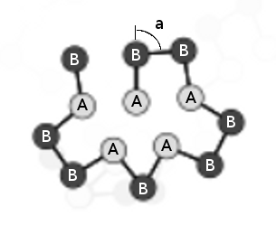
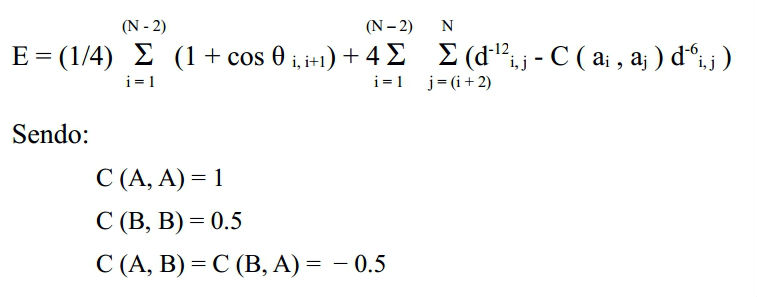
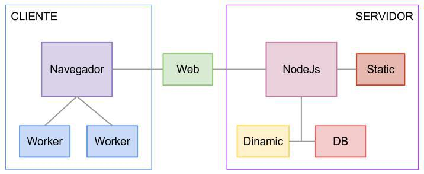

Atwood's Law: any application that
can be written in JavaScript,
will eventually be written in JavaScript.
Uma proteína pode ser definida como um polímero linear composto por aminoácidos. A sequência de aminoácidos ao longo da cadeia polipeptídica é denominada estrutura primária. O arranjo espacial de aminoácidos próximos entre si na sequência primária da proteína forma a estrutura secundária. Enquanto a estrutura secundária é determinada pelo relacionamento estrutural de curta distância, a terciária é caracterizada pelas interações de longa distância entre aminoácidos. Finalmente, algumas proteínas podem ter duas ou mais cadeias polipeptídicas, a conformação dessas cadeias em estruturas tridimensionais é a estrutura quaternária.
A forma de uma proteína determina sua função, portanto a sequência de aminoácidos pode predizer o comportamento de uma determinada proteína no organismo. Existe a hipótese de que a estrutura terciária pode ser determinada a partir da sequência primária, o que permitiria que algoritmos fossem desenvolvidos para predizer estruturas terciárias quando a primária estivesse disponível.
Porém está é uma tarefa extremamente complexa com altas demandas computacionais mesmo para proteínas pequenas. O problema de dobramento de proteínas é extremamente difícil e pertence a uma classe de problemas denominados NP-completos.
Com o objetivo de facilitar o desenvolvimento de soluções para o complexo problema do dobramento de proteínas foram desenvolvidos modelos simplificados. Este trabalho utiliza um destes modelos simplificados denominado modelo AB.
Palavras-chave: algoritmo, dobramento de proteína, modelo AB, Javascript.
A compreensão do dobramento de proteínas é de fundamental importância para a área da saúde. Considerando a importância do processo de dobramento das proteínas para a definição de sua funcionalidade no metabolismo dos organismos, muito esforço tem sido feito na tentativa de compreender seu funcionamento.
A sequência de aminoácidos específica de uma proteína, também denominada estrutura primária, dobra-se para tomar a sua configuração natural. Apesar destas macromoléculas aparentarem estar a dobrar-se a si mesmas, a sua dobra muda de acordo com as características das moléculas que as rodeiam, incluindo a concentração dos sais, a pressão, a temperatura, enfim de infinitos elementos. O dobramento é um processo espontâneo, natural.
A conformação nativa de uma proteína é frequentemente a configuração termodinamicamente mais estável, ou seja, que possui menor energia livre. Assim, podemos descrever o problema de Predição de Estruturas de Proteínas como um problema de otimização, onde a estrutura com menor energia livre deve ser encontrada dentre todas as possíveis estruturas.
Entretanto este é um problema NP completo [8] , no qual métodos tradicionais de otimização, em geral, não apresentam bom desempenho. Com o objetivo de facilitar o desenvolvimento de métodos para solucionar o problema, modelos simplificados são utilizados, como o modelo AB que é apresentado a seguir.
No modelo de dobramento AB, a proteína é descrita como uma sequência de aminoácidos hidrofóbicos (A) e hidrofílicos (B). A figura apresenta uma estrutura simplificada com treze aminoácidos em seu estado mais estável, onde “a” representa segundo ângulo entre os aminoácidos. Em nosso modelo os ângulos estarão restritos entre (-π, π).
A função abaixo será usada para calcular a energia de um modelo de proteína-alvo em uma determinada conformação:
 Onde “E” representa a energia, “N” simboliza o comprimento da sequência de aminoácidos, “a” é o tipo do aminoácido (A ou B), “C” são as cargas dadas, “θ” é o ângulo e “d” a distância entre os aminoácidos.
As sequências de aminoácidos foram geradas de acordo com a sequência de Fibonacci [13] , onde o próximo elemento é resultado da concatenação dos últimos dois elementos. O objetivo é evitar padrões repetitivos e simétricos, tornando o modelo mais próximo de uma proteína real.
Sequência de Fibonacci aplicada ao modelo AB:
f(0) = A; f(1) = B; f(n) = f(n-2) + f(n-1); Ex: A, B, AB, B AB, AB BAB, BAB ABBAB, …
O conjunto de problemas que podem ser resolvidos em tempo Polinomial por uma máquina de Turing determinística é denominado P O conjunto de problemas que são decidíveis em tempo Polinomial por uma máquina de Turing Não-determinística é denominado NP. Um subconjunto de NP denominado NP-completo é um conjunto cujos problemas precisam satisfazer a seguinte condição: todo problema em NP é redutível para este problema em tempo polinomial. Portanto, se tivéssemos um algoritmo de tempo polinomial para resolver um problema NP-completo, podíamos resolver todos os problemas NP em tempo polinomial.
Para ilustrar a complexidade do problema de dobramento, foi desenvolvida uma aplicação que mapeasse a energia em todas as conformações possíveis de uma proteína simplificada de acordo com o modelo AB. Com o objetivo de gerar gráficos bidimensionais, foram usadas tetrâmeros pois, como o primeiro e o último ângulo não alteram a conformação, ficamos com uma matriz de dois ângulos de comprimento. O primeiro ângulo é usado no eixo horizontal (x) e o segundo no eixo vertical (y). Os ângulos variam entre -π e +π radianos, de forma que no centro de cada eixo estará o ângulo 0. No centro do gráfico estará a proteína em sua conformação linear.
O valor da energia de cada conformação está apresentado em cores com valor mínimo indicado em cada gráfico. Os valores de energia acima de um estão em vermelho enquanto os valores menores que um são graduados linearmente de acordo com a barra de cores.
A geração de um único gráfico com uma resolução acima, de vinte ângulos, ou seja, de π / 10 radianos, para uma proteína de quatro aminoácidos, resulta na computação de quatrocentos (202 ) modelos de proteínas. É possível encontrar este valor através da seguinte fórmula: P = R(N – 2), onde P é o número de modelos de proteínas possíveis, R é a quantidade de ângulos para cada aminoácido e N é o comprimento da cadeia primária. Supondo a geração de um gráfico multidimensional com a mesma resolução para uma proteína de somente doze aminoácidos, seriam calculadas mais de 4 x 1015 modelos de proteínas. Se o cálculo de um único modelo demorar um milésimo de segundo, a suposta geração do gráfico demoraria mais de cento e vinte mil anos.
Anfisen [1] analisa de forma minuciosa o dobramento de proteínas reais percebendo uma série de aspectos do problema, como a conformação de padrões locais. Porém, mesmo percebendo a complexidade do problema, considera que com a crescente quantidade de dados disponível e com a evolução teórica, a ideia de prever o dobramento de proteínas começava a se tornar mais realista. De acordo com a hipótese de Anfisen, a estrutura terciária nativa de uma proteína pode ser determinada a partir da informação contida na sequência primária, o que permitiria que métodos computacionais fossem desenvolvidos para predizer estruturas terciárias quando a primária estivesse disponível.
Em 1993, Stillinger, Head-Gordon e Hirshfeld publicaram em [2] um modelo de proteínas simplificado e iniciaram os estudos desse modelo através de algoritmos baseados em redes neurais. Nesse artigo, são analisadas trímeros, tetrâmeros e pentâmeros, e é apresentada uma tabela (tabela 1) com as conformações de menor energia para todas estas sequencia de aminoácidos.
No artigo [3] , Stillinger ressalta a importância da sequencia de aminoácidos para o modelo AB e analisa diferentes sequencias para proteínas maiores, de até 55 aminoácidos. Dois tipos de sequencias são analisadas, o primeiro tipo é denominado “Center Doped” e usa o padrão (An – B – An), enquanto o segundo se inspira na série de Fibonacci.
A aplicação Web que foi desenvolvida neste trabalho utilizou ferramentas recentes para implementação de forma a obter a performance desejada durante sua execução. Basicamente toda a aplicação foi escrita em Javascript e buscou-se minimizar os estilos em CSS assim como a estrutura em HTML com o objetivo de agilizar a renderização.
No anexo I encontra-se um resumo das características do ambiente de desenvolvimento e da linguagem utilizada, assim como mais detalhes sobre os arquivos da aplicação e sua API.
A figura demonstra essa divisão e a forma como as diferentes partes se conectam e estabelecem hierarquias. Ressalta-se que a parte dinâmica da aplicação têm uma conexão forte com o elemento central, a Internet, porém essa comunicação é intermediada pelo servidor, portanto é possível executar a aplicação de modo offline, ou seja, fora da Web, através de um servidor local.
Simulated Annealing é uma meta heurística genérica para problemas de otimização global que consiste numa técnica de busca local probabilística. É usada normalmente em grandes espaços de busca e se fundamenta numa analogia com a segunda lei da termodinâmica.
Inicialmente, foi implementado um algoritmo com as características desta metaheurística que apresentou resultados interessantes. Apesar deste algoritmo não ter bons resultados no início da busca, se demostrou excelente em refinar as soluções.
Devido ao fato de o algoritmo não apresentar ferramentas para escapar de situações em que a conformação apresenta um valor de energia baixo em relação às conformações vizinhas (ótimos locais), a busca não partia para uma conformação inicial promissora.
Porém, dada uma conformação com características levemente próximas àquelas apresentadas na solução do problema, o algoritmo se demonstrou muito eficaz em finalizar a busca, ajustando finamente os ângulos até a conformação ideal.
Para satisfazer as necessidades percebidas pela implementação anterior, foi desenvolvida uma solução que utilizasse técnicas menos diretas, que tratassem o problema em um nível mais subjetivo. Buscou-se então, conceitos mais abrangentes, que pudessem ser aplicados à diversas classes de problemas. Dentre esses conceitos, dois foram os que serviram de inspiração para esta proposta: o conceito de Aprendizagem de Máquina (Machine Learning) e os algoritmos genéticos, mais particularmente os Algoritmos de Distribuição Estimada.
Com esses conceitos em mente, foi desenvolvido o algoritmo, denominado Algoritmo de Aprendizagem Estimada, que parte de uma proteína linear e através de dois parâmetros básicos (Rigidez e Eficiência), ajusta os ângulos sucessivamente. Após cada ajuste, ou dobra, a energia da proteína é calculada e os parâmetros são atualizados com base no resultado deste cálculo.
O parâmetro denominado Eficiência (efficiency) é aplicado no momento em que é selecionado o ângulo onde será realizada a dobra. Esta seleção é aleatória, sendo que quanto maior a Eficiência de um aminoácido do modelo, maior a chance dele ser selecionado. A Eficiência de um aminoácido aumenta quando a dobra realizada aumenta a estabilidade da proteína, assim o algoritmo aumenta as chances de sucesso das dobras seguintes. A Eficiência é inicializada com valor crescente entre zero e um, sendo zero para o início e um para o fim da proteína, desta forma, no início da execução, as dobras acontecem com maior frequência no fim da sequência de aminoácidos.
A cada passo, são alterados três ângulos ao longo da estrutura primária e somente os parâmetros atribuídos à esses ângulos são atualizados. A alteração de múltiplos ângulos acelera o dobramento e aumenta as chances de gerar novas soluções, evitando assim a estagnação da busca em ótimos locais. São alterados apenas três ângulos pois assim garantese a geração de soluções válidas, ou seja, que não dobram sobre si mesmas.
A Rigidez (rigidity) influencia diretamente no valor do ângulo gerado em cada novo dobramento, sendo que quanto mais rígido, menor provavelmente será o novo ângulo. Dessa forma, no início da busca teremos maiores mudanças e, na medida em que a proteína se dobra em estados mais estáveis, a Rigidez aumenta e ângulos mais agudos são gerados, provocando assim um ajuste cada vez mais fino dos ângulos. A Rigidez é inicializada com valor zero para todos os aminoácidos. Utiliza-se uma função Gaussiana que considera o valor da rigidez para gerar os valores dos novos ângulos.
Até o presente momento não foi definido um critério de parada para o algoritmo, sendo que, nos testes realizados, foi utilizado o valor fixo de duas mil etapas. Ao final do processo um gráfico interativo é gerado demonstrando os valores de energia ao longo do processo e as proteínas equivalentes renderizadas.
initParameters(efficiency, rigidity);
minProtein = protein;
while (stopCriteria) {
a = chooseAngles(3);
newProtein = new Protein({ang: randomGauss(a)});
pushToData(newProtein);
if (newProtein.energy < minProtein.energy) {
minProtein = newProtein;
adjustParameters(efficiency, rigidity, a);
}
}
renderData();
Nesse trabalho foi apresentado uma abordagem para implementar uma aplicação Web em Javascript explorando a arquitetura cliente servidor. O resultado parece promissor, pois seu funcionamento foi de acordo com o esperado, sem erros de nenhum tipo e com a performance desejada. O trabalho aponta diversas áreas para pesquisas futuras que podem tornar a arquitetura e o algoritmo mais abrangentes.
Primeiramente, é necessário analisar questões relacionadas à performance neste modelo de eventos (Input/Output), pois é provável que existam outras abordagens que otimizem a performance da aplicação. Em segundo lugar, é preciso avaliar corretamente servidores e interpretadores em Javascript e realizar experimentos com benchmarks para adquirir maior conhecimento e confiabilidade neste tipo de aplicação.
Em relação ao algoritmo, percebe-se que além da meta análise aprofundada dos parâmetros e métodos apresentados, para determinar a validade da proposta é fundamental a comparação com outros algoritmos, cujos resultados sejam de qualidade reconhecida
Essa segunda análise é muito importante, porém não se anseia com este trabalho a implementação de um algoritmo com resultados superiores aos métodos já altamente elaborados pela comunidade cientifica. O que se espera é validar as técnicas propostas e combiná-las gerando uma heurística de alto nível, que possa ser utilizada em outros problemas similares.
Nos próximos meses serão testadas novas versões do algoritmo e seu desenvolvimento será acompanhado pelos gráficos. Para uma medida mais precisa será usada a média dos resultados dos experimentos. Através de uma pesquisa quantitativa aplicada, serão explorados métodos para aperfeiçoar o algoritmo de otimização proposto. Tais métodos consistem em utilizar a informações como o número de sucessos e falhas nas dobras, a variação de energia e de ângulos para a avaliação empírica do algoritmo.
| Atividades | J | A | S | O | N | D | |
| 1 | Desenvolvimento do algoritmo | X | |||||
| 2 | Realização de experimentos | X | X | X | |||
| 3 | Avaliação dos resultados | X | X | X | |||
| 4 | Comparação com outros algoritmos | X | X | ||||
| 5 | Escrita e publicação de artigos | X | X | X | |||
| 6 | Escrita da dissertação | X | X | X | |||
| 7 | Revisão do texto | X | X | ||||
| 8 | Entrega do trabalho | X | |||||
| 9 | Defesa da dissertação | X |
Serão geradas populações de resultados obtidos com variações da aplicação de forma a analisar estatisticamente a diferença de performance obtida com os métodos e parâmetros usados nos experimentos.
[1] Anfisen, Christian B. (1973) “Principles that Govern the Folding of Protein Chains” Science, New Series, Vol. 181, No. 4096 (Jul. 20, 1973), pp. 223-230
[2] Stillinger, F. H. and Head-Gordon, Teresa and Hirshfeld, Catherine L. (1993) “Toy model for protein folding” Phys. Rev. E 48 n2.
[3] Stillinger, F. H. (1995) “Collective aspects of protein folding illustrated by a toy model” Phys. Rev. E 52, 2872.
[4] Luscombe, N. M. and Greenbaum, D. and Gerstein, M. (2001) “What is Bioinformatics? A proposed definition and an overview of the field”, Methods Inf. Med., v. 40 (4), 346-358.
[5] Simpson, A. J. (2000) “The genome sequence of the plant pathogen Xylella fastidiosa. The Xylella fastidiosa Consortium of the Organization for Nucleotide Sequencing and Analysis”, Nature Magazine, July.
[6] Ptitsyn. (1996) “A determinable but unresolved problem”, The FASEB Journal, v. 10.
[7] Dobson. (1999) “Protein misfolding, evolution and disease”, Trends in Biochemical Sciences, v. 24.
[8] Frankael, A. S. (1993) “Complexity of Protein-Folding”, Bulletin of Mathematical Biology, 55.
[9] S. Kirkpatrick, C. D. Gelatt Jr., and M. P. Vecchi (1983), “Optimization by simulated annealing”, Science, vol. 220, pp. 671–680.
[10] Mitchell, Tom M. (1997) “Machine Learning”, McGraw-Hill ISBN: 0070428077
[11] Chen, Benhui and Hu, Jinglu (2009) “A Novel Clustering Based Niching EDA for Protein Folding”, in Proc. of World Congress on Nature and Biologically Inspired Computing (NaBIC 2009) (Coimbatore, India), Dec. 2009, pp.748-753.
[12] Zhao X. (2008) “Advances on protein folding simulations based on the lattice HP models with natural computing”, Science Direct.
[13] Bergum, G. E. and Philippou, A. N. and Horadam, A. F. (1990) “Applications of Fibonacci Numbers”, Kluwer Academic, Dordrecht, Vol. 3.
[14] World Wide Web Consortium - W3C (2012) “Introduction to Web Accessibility”, http://www.w3.org/WAI/intro/accessibility.php, September.
[15] Crockford, Douglas (2012) “Javascript: The world's most misunderstood programming language”, http://www.crockford.com/javascript/javascript.html, September.
[16] Microsoft Corporation - “Introducing JScript .NET”, http://msdn.microsoft.com/enus/library/ms974588.aspx, September.
[17] Netcraft LTD (2012) “September 2012 Web Server Survey”, http://news.netcraft.com/archives/2012/09/10/september-2012-web-serversurvey.html, September.
[18] World Wide Web Consortium - W3C (2008) “HTML 5 - A vocabulary and associated APIs for HTML and XHTML”, http://www.w3.org/TR/html5/, September
[19] Joyent Inc. (2012) “Node.js Manual & Documentation”, http://nodejs.org/api/index.html, September.
[20] Tilkov, Stefan e Vinoski, Steve (2010) “Node.js: Using JavaScript to Build HighPerformance Network Programs”, IEEE Computer Society - P. 80 - 83, November/December.
[21] Deveria, Alexis (2012) “JS API Support - Global usage share statistics based on data from StatCounter GlobalStats for November, 2012”, http://caniuse.com/#cats=JS_API, November.
[22] World Wide Web Consortium - W3C (2012) “Web Workers, Editor's Draft 4 December 2012”, http://dev.w3.org/html5/workers, December.
[23] Schlueter, Isaac Z. (2012) “Node Packaged Modules” https://github.com/isaacs/npm, December.